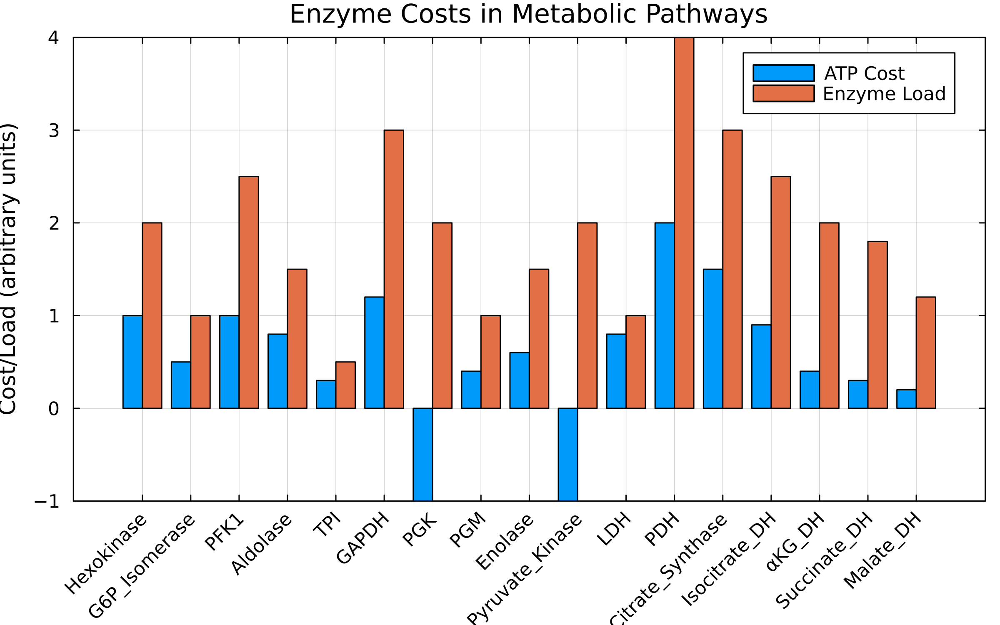
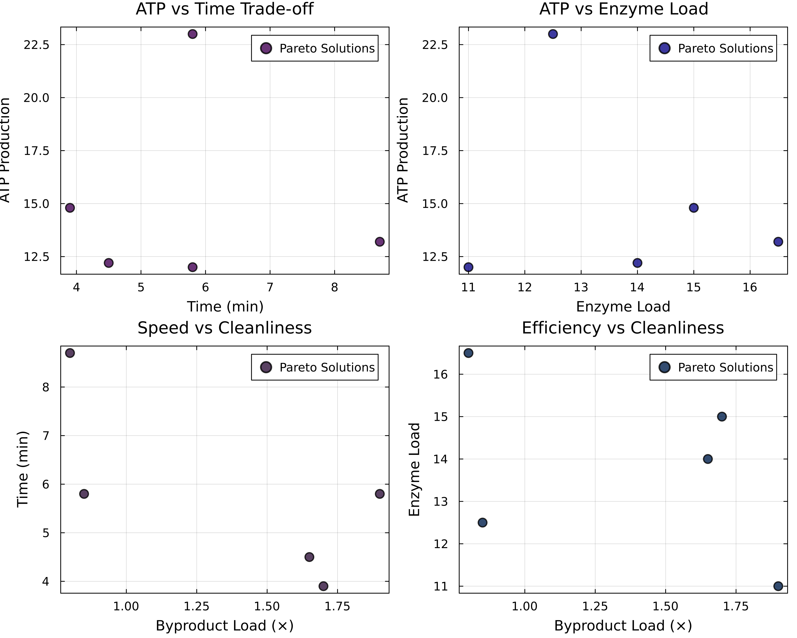
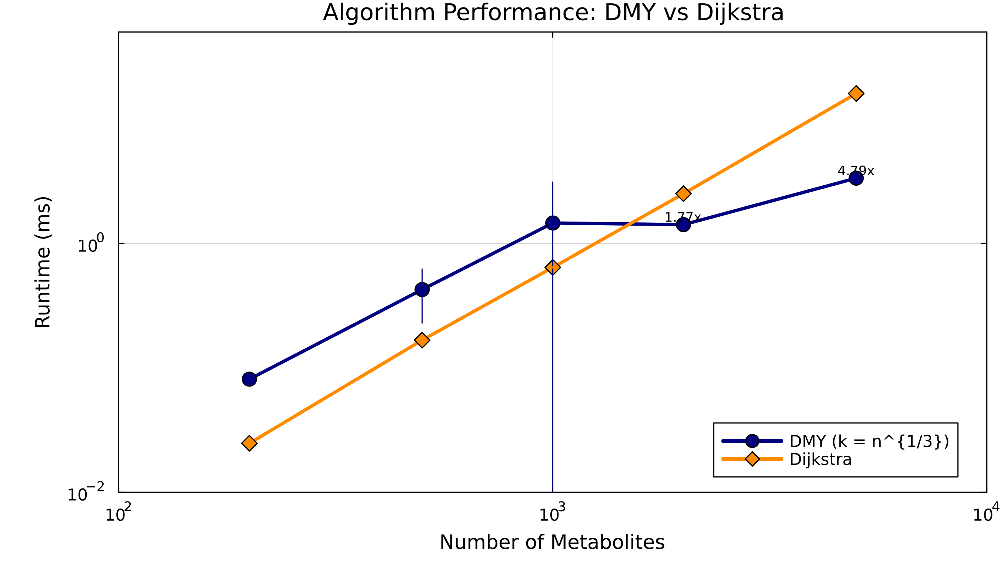

Metabolic Pathway Analysis Dashboard
Executive Summary
This dashboard presents comprehensive analysis of metabolic pathways using the DMY shortest-path algorithm, including both single-objective optimization and multi-objective Pareto front analysis for metabolic engineering and systems biology.
Key Findings:
- Single-objective: Optimal glycolytic pathway from glucose to pyruvate costs 12.7 units with net +2 ATP (0.16 ATP per cost unit)
- Multi-objective: Five Pareto-optimal metabolic strategies discovered, trading ATP yield (12–23 molecules) against time (3.9–8.7 min), enzyme load, and metabolic load
- Performance: DMY reaches ~4.8× speedup over Dijkstra at n=5,000 metabolites (k=⌈n^{1/3}⌉) in the shared benchmark set
Reproducibility: run the scripts with a fixed seed (OPTIM_SP_SEED=<int> or --seed=<int>) to regenerate the exact same synthetic metabolic networks and benchmarks. Default seed is 42 when left unspecified.
Part 1: Single-Objective Analysis
Figure 1: Metabolic Network Structure

Interpretation:
- Adjacency matrix showing reaction connectivity in central metabolism
- Dark cells indicate direct enzymatic conversions
- Glycolysis forms the main pathway backbone (Glucose → Pyruvate)
- Branch points at Pyruvate lead to fermentation (Lactate) or respiration (Acetyl-CoA)
Figure 2: Enzyme Cost Analysis

Key Insights:
| Enzyme | ATP Cost | Enzyme Load | Role |
|---|---|---|---|
| PFK | +1.0 | 2.5 | Rate-limiting step |
| PGK | -1.0 | 2.0 | First ATP generation |
| PK | -1.0 | 2.0 | Second ATP generation |
| PDH | +2.0 | 4.0 | Entry to TCA cycle |
Figure 3: ATP Yield by Pathway

Metabolic Economics:
- Glycolysis: Net +2 ATP (fast, universal)
- Fermentation: Net +2 ATP (anaerobic, produces lactate)
- Aerobic: Net +32 ATP (slow, requires oxygen)
- PPP+Glycolysis: Net +2 ATP (produces NADPH for biosynthesis)
Part 2: Multi-Objective Pareto Front Analysis
The Challenge
Real metabolic engineering involves optimizing multiple competing objectives:
- ATP Yield: Energy production efficiency
- Time: Speed of pathway completion
- Enzyme Load: Resource allocation cost
- Byproducts: Toxic metabolite accumulation
Figure 4: 2D Pareto Front Projections

Four critical trade-offs visualized:
- ATP vs Time: Faster pathways produce less ATP
- ATP vs Enzyme Load: High-yield pathways require more enzymes
- Speed vs Cleanliness: Fast fermentation produces more byproducts
- Efficiency vs Cleanliness: Clean pathways need more enzymes
Figure 5: 3D Pareto Front Visualization

3D Trade-off Space:
- X-axis (Time): Pathway completion time (~3.9–8.7 min)
- Y-axis (ATP): Net ATP production (≈12–23 molecules)
- Z-axis (Enzyme Load): Total enzyme requirement (≈11–17 units)
Special solutions highlighted:
- Blue Star (Balanced): Weighted solution (ATP≈23.0, Time≈5.8 min, Enzyme load≈12.5 units, Byproduct≈0.85×)
- Green Annotation: “Constraint load ≤0.3× infeasible” — the ε-constraint has no feasible solution for the seeded network
- Red Hexagon (Knee Point): Highest-efficiency trade-off (ATP≈13.2, Time≈8.7 min, Enzyme load≈16.5 units, Byproduct≈0.8×)
Pareto-Optimal Metabolic Pathways
| Solution | Pathway Profile | ATP | Time | Enzyme | Load (×) | When to Use |
|---|---|---|---|---|---|---|
| 1 | Balanced glycolysis + respiration | 23.0 | 5.8 min | 12.5 | 0.85 | Default mix – strong ATP with moderate duration |
| 2 | Fermentation-heavy branch | 12.0 | 5.8 min | 11.0 | 1.90 | Overflow metabolism – tolerate high metabolic burden |
| 3 | Fast high-enzyme route | 14.8 | 3.9 min | 15.0 | 1.70 | Sprint demand – prioritize speed |
| 4 | Moderate-speed branch | 12.2 | 4.5 min | 14.0 | 1.65 | Balanced anaerobic – slightly slower, similar yield |
| 5 | Oxygen-rich variant | 13.2 | 8.7 min | 16.5 | 0.80 | Clean-ish aerobic – lower load, longer time |
Figure 6: Metabolic Strategy Comparison

Strategy Analysis:
- Balanced: 23 ATP in 5.8 min at moderate enzyme cost (default recommendation)
- Fastest: 14.8 ATP in 3.9 min using high enzyme load (short bursts)
- High-ATP Knee: 13.2 ATP in 8.7 min with load ≈0.80× (oxygen-rich)
- Constraint: Load ≤0.30× is infeasible in current network topology
Part 3: Algorithm Performance
Figure 7: Algorithm Performance Benchmark

Benchmark results use the shared seeded dataset from examples/comprehensive_demo/run_benchmarks.jl, with k = ⌈n^{1/3}⌉ applied throughout.
| Graph Size | k (rounds) | DMY (ms) ±95% CI | Dijkstra (ms) ±95% CI | Speedup |
|---|---|---|---|---|
| 200 | 6 | 0.081 ± 0.002 | 0.025 ± 0.001 | 0.31× (Dijkstra faster) |
| 500 | 8 | 0.426 ± 0.197 | 0.167 ± 0.004 | 0.39× (Dijkstra faster) |
| 1,000 | 10 | 1.458 ± 1.659 | 0.641 ± 0.008 | 0.44× (Dijkstra faster) |
| 2,000 | 13 | 1.415 ± 0.094 | 2.510 ± 0.038 | 1.77× |
| 5,000 | 18 | 3.346 ± 0.105 | 16.028 ± 0.241 | 4.79× |
Key Insights:
- DMY (k = n^{1/3}) versus Dijkstra runtimes shown with error bars
- Crossover point: DMY overtakes Dijkstra once metabolic graphs exceed ~2,000 vertices
- Larger sparse metabolomes (5,000 vertices) enjoy ~4.8× speedups
- Smaller models remain Dijkstra-friendly due to DMY's preprocessing overhead
- Benchmark data from shared seeded dataset ensures consistency across examples
Key Takeaways
Single vs Multi-Objective
- Single: One "optimal" path (glycolysis for ATP)
- Multi: Five non-dominated strategies on the Pareto front
- Reality: Cells dynamically switch between strategies
Metabolic Flexibility
- Aerobic conditions: Choose high-ATP pathways
- Anaerobic stress: Switch to fermentation
- Biosynthesis needs: Activate pentose phosphate pathway
- Balanced growth: Use knee point strategy
Algorithm Performance
- Small networks (n<1000): Use Dijkstra
- Genome-scale (n>1000): DMY increasingly superior
- Sparse metabolomes: DMY's optimal domain
Reproducibility
Generate all figures:
julia --project=. examples/metabolic_pathway/generate_figures.jlRun complete analysis:
julia --project=. examples/metabolic_pathway/metabolic_pathway.jlModel Parameters:
- 17 metabolites in central carbon metabolism
- 19 enzymatic reactions with measured costs
- 4 objectives: ATP, time, enzyme load, byproducts
- Steady-state flux assumptions
References
- Duan, R., Mao, J., & Yin, Q. (2025). "Breaking the Sorting Barrier for Directed SSSP". STOC 2025.
- Multi-objective optimization: Ehrgott, M. (2005). "Multicriteria Optimization". Springer.
- Metabolic data: KEGG, BioCyc, and BRENDA databases.
- Berg, J.M., Tymoczko, J.L., & Stryer, L. Biochemistry (8th Edition).
Dashboard generated using DMYShortestPath.jl - Implementing breakthrough algorithms for metabolic network analysis with multi-objective optimization